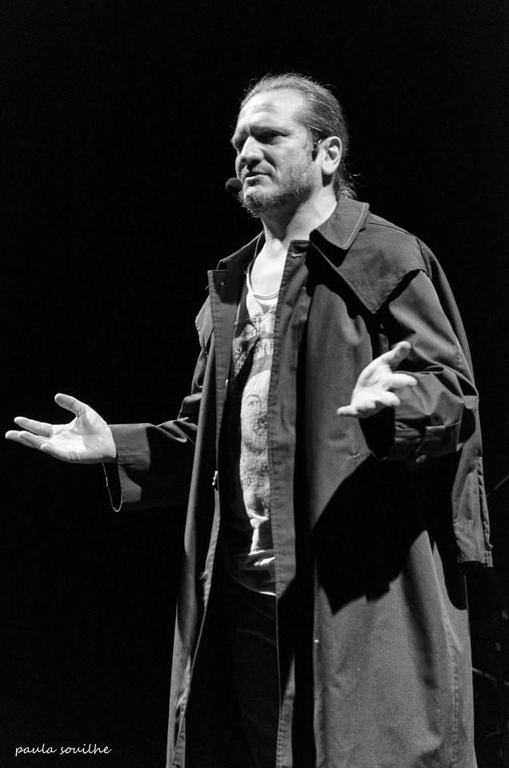

Un apasionado de la filosofía que te hace reflexionar acerca de lo cotidiano

Fotografía del escritor, divulgador de filosofía, ensayista, docente, y presentador.
Aquí algunos detalles del filósofo y docente Darío Sztajnszrajber:
1968- Nació el 16 de junio en Buenos Aires, Argentina.
Estaba entre estudiar Literatura o Filosofía y se decidió por esta última
2011- Comienzó a conducír el programa de televisión Mentira la verdad por Canal Encuentro,
que fue nominado a los premios Emmy, en tres oportunidades y fue ganador de distintos premios a la televisión
cultural internacional, entre ellos el prestigioso Japan Prize.
Entre 2012 y 2014- Hizo en Radio Madre el programa "El innombrable", también “Demasiado humano” en la radio Futuröck por internet.
2013- Publicó ¿Para qué sirve la filosofía?, su primer libro, el cual es un intento por desmontar la rigidez de
la disciplina filosófica y hacerla accesible a un público más amplio, pero sobre todo diferenciando a la filosofía de su clásica vocación por la verdad.
- Estrenó otro programa de televisión en Canal Encuentro: El amor al cine, donde presentó películas de amor y analizándolas desde el punto de vista filosófico.
2014- Se vuelve columnista del programa de radio "Metro y medio" (Radio Metro) conducido por Sebastian Wainraich.
2015- Sztajnszrajber conduce el programa de filosofía en radio "Demasiado humano" en
por la Red de Radios Universitarias Nacionales (ARUNA).
2017 Recibió el premio Konex a la duvulgación.
2018 Publica su libro, "Filosofía en 11 frases" donde busca, por medio de las frases más importantes de la filosofía, hacer
reflexionar a sus lectores acerca de la realidad.
2019 Publica su libro "Filosofía a martillazos", donde trata las preguntas eternas sobre Dios, el amor, la verdad y cuestiones contemporaneas
como: la demodracia, desde una perspectiva filosófica. En 2020 lanzó el tomo 2 de este mismo.
Tiene tres hijos: María, León y Teo
Se ha desempeñado como profesor en casi todos los niveles educativos: primario, secundario, terciario, universitario y posgrado. Dicta clases en la Facultad Latinoamericana
de Ciencias Sociales (FLACSO) en las áreas de Comunicación (Posgrado de Gestión Cultural) y Educación. También es docente en el CBC de la Universidad de Buenos Aires, y en la materia
"Problemas filosóficos" de la Universidad Nacional de Hurlingham (UNAHUR). Además e desempeña como docente en la Facultad de Ciencias Sociales de la UBA y en el Colegio Pestalozzi.
"Imagínense un mundo donde la última palabra fuese la pregunta por el 'por qué', sería un mundo sin última palabra, porque si
la última palabra es siempre preguntar 'por qué', obligamos a aquellos que vienen a imponernos sus intereses en nombre de la verdad a tener que seguir
justificando sus dichos."
Darío Sztajnszrajber